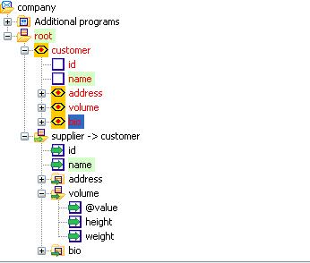

Previous
Previous  Table of Contents
Table of Contents 

XML - Tutorial 4
|
Instruction |
Illustration |
||
|---|---|---|---|
|
|
||
|
|||
|
Error:
<?xml version="1.0" encoding="UTF-8"?> <root> <customer id="1"> <name>trainer</name> <address str="Edisonstraße 1"/> <volume value="5000"> <height>5000</height> <weight>5000</weight> </volume> <bio> <height>180</height> <weight>80</weight> </bio> </customer> <supplier id="2378"> <name>Customer One</name> <address str="rosenstraße 100"/> <address str="äonenweg 223"/> <volume value="0"> <height/> <weight/> </volume> <bio> <height/> <weight/> </bio> |
||
|
 | ||
You can double check your mapping with the trainer solution. |
Record customer: /*
copy customer information to supplier information
*/
copy THIS:id to root.supplier:id;
copy THIS.name:value to root.supplier.name:value;
Record volume: copy THIS:\@value to root.supplier.volume:\@value; copy THIS.height:value to root.supplier.volume.height:value; copy THIS.weight:value to root.supplier.volume.weight:value; Record bio: copy THIS.height:value to root.supplier.bio.height:value; copy THIS.weight:value to root.supplier.bio.weight:value; |
{kind=link}
{kind=link}
{kind=link}